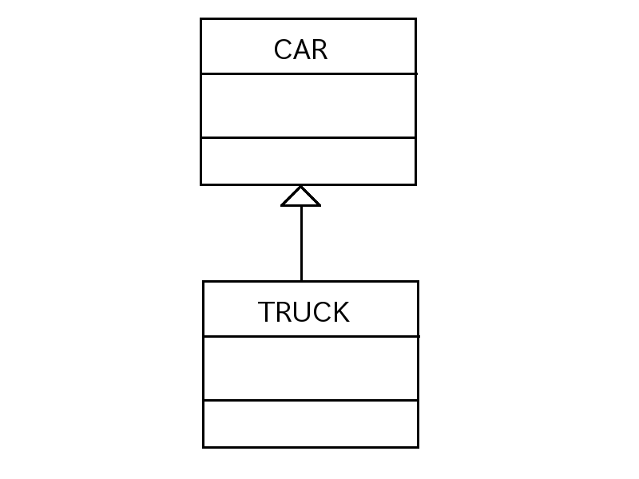

汎化 (is a 関係)
前のページではクラスがひとつだけの場合のクラス図を描きましたが、クラスが2つ以上ある場合はあるクラスと他のクラスの関係も図に表す必要があります。
クラス間の関係は大きく分けると「汎化」「関連」の２つがあり、「関連」は更に「集約」「コンポジション」「依存」の 3 つのサブ関係に分かれます。
ここではまず「汎化」について学びます。
さて「汎化」とは具体的には「インヘリタンス(継承)」の関係を表します。
例えば次の CAR (車) スーパークラス(ソース1)を継承して TRUCK (トラック) サブクラス(ソース2)を作ったとします。
ソース1:
class CAR
{
public CAR(){}
};
ソース2:
public class TRUCK extends CAR{
{
public TRUCK(){}
};
この関係を英語で書くと
TRUCK is a CAR (トラックは車です)
となりますので、「汎化」は別名「is a 関係」とも言います。
さて「汎化」をクラス図で表す場合は中抜き三角の矢印線でクラスとクラスをつないで表します。
この矢印はスーパークラスの方に向けて付けます。
例えば上の CAR スーパークラスと TRUCK サブクラスのクラス図は次のようになります。
図1 汎化(is a 関係) (クリックで拡大)
